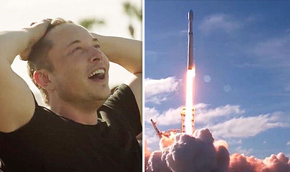

- Founder, CEO & Lead Designer, SpaceX
- Co-Founder, CEO & Product Architect, Tesla Motors
- Co-Founder & CEO, Neuralink
- Founder, TheBoringCompany
- Co-Founder & Chairman, OpenAI
- Co-Founder, Paypal

Elon Musk's incredible reaction to Falcon Heavy launch - 6th February 2018
A short Biography
Elon Musk was born and raised in Pretoria, South Africa,
he then moved to Canada when he was 17 to attend Queen's University.
He transferred to the University of Pennsylvania two years later,
where he received an economics degree from the Wharton School and
a degree in physics from the College of Arts and Sciences.
He began a Ph.D. in applied physics and material sciences at
Stanford University in 1995 but dropped out after two days to
pursue an entrepreneurial career.
He subsequently co-founded Zip2, a web software company,
which was acquired by Compaq for $340 million in 1999.
Musk then founded X.com, an online bank.
It merged with Confinity in 2000 and later that year became PayPal,
which was bought by eBay for $1.5 billion in October 2002.
In May 2002, Musk founded SpaceX, an aerospace manufacturer and space
transport services company, of which he is CEO and lead designer.
He helped fund Tesla, Inc., an electric vehicle and solar panel
manufacturer, in 2003, and became its CEO and product architect.
In 2006, he inspired the creation of SolarCity, a solar energy services
company that is now a subsidiary of Tesla, and operates as its chairman.
In 2015, Musk co-founded OpenAI, a nonprofit research company that aims
to promote friendly artificial intelligence. In July 2016, he co-founded Neuralink,
a neurotechnology company focused on developing brain–computer interfaces.
In December 2016, Musk founded The Boring Company, an infrastructure and
tunnel-construction company.
In addition to his primary business pursuits, Musk has envisioned a
high-speed transportation system known as the Hyperloop, and has proposed
a vertical take-off and landing supersonic jet electric aircraft with electric
fan propulsion, known as the Musk electric jet.[17] Musk has stated that the goals
of SpaceX, Tesla, and SolarCity revolve around his vision to change the world and
humanity.[18] His goals include reducing global warming through sustainable energy
production and consumption, and reducing the risk of human extinction by establishing
a human colony on Mars.[19]